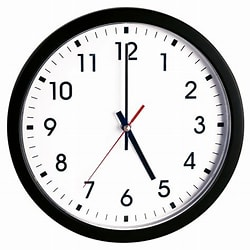

GESTIONAR EL TIEMPO Y LA MOTIVACIÓN PARA CERRAR UN CICLO
¿PARA QUIENES ESTÁ PENSADO?
Para quienes están por iniciar, iniciando, o en proceso de tesis o trabajo final de carrera y/o posgrado.
¿CUÁLES TEMAS VAMOS A TRABAJAR?
¿QUÉ VAMOS A HACER?
Contacto personal de conocimiento (virtual), clase virtual (grabada), proceso de reflexión personal y Conversación virtual.
